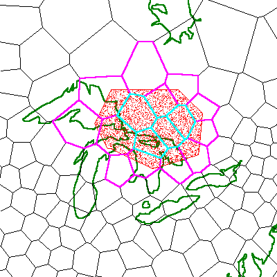

The purpose of this chapter is to help you consolidate some of your accumulated knowledge and to provide you with some additional ideas on how to refine your design. You will learn some more facts about how Hipparchus works with your geographic objects and how you can control resolution and manage precision. More specifically, you will be able to test your processing plan against practical memory constraints.
The simplest geographic feature that you can represent in your application is a point on the Earth's surface. In Chapter 4: Getting Started you initially read in data about the location of a city and represented it as a point location. Your application might not ever need to do more than that. For example, armed with that point location representing a city, you might have found its home cell. You could then have used the home cell identifier to help look up all the facts about the city in an external database. Or you might have kept the coordinates of the city at hand, read in the location of a second city and calculated the distance between them.
Many high-precision geodetic survey applications require only a simple point representation of geographic features. Indeed, Hipparchus provides all of the conventional functions that a survey engineer would require to work with such points.
However, as described in Chapter 5: Design Concepts, Hipparchus provides other more powerful abstractions for representing your geographic features. The Hipparchus Library provides the structures and facilities for creating and manipulating geographic objects. These can represent geographic features as point sets, line sets or regions.
For the remainder of this chapter we will address the abstract meaning that you can attach to these objects as well as the practical aspects of constructing and manipulating them.
As you have read in Chapter 5: Design Concepts, the position of an object is geographically defined by one or more points on the Earth's surface.
Of course, you can use points on the surface to model features immediately above or below the surface too. All you need are the elevations of the features. For example, to represent the location of a sunken Spanish treasure galleon, you would record its surface latitude and longitude and note its depth as an associated item of data.
Hipparchus takes point location information to be references to the surface. For example, when calculating the distance between two points, it calculates the distance as though the points were on the surface. If this is not adequate, you can make the adjustments for elevation or depth that are appropriate for your discipline. For example, if your application works with deep earthquakes, you might want to adjust the surface distance of an earthquake epicenter to an observer to account for the travel time of the tremor. Hipparchus does the hard part, working out the distances for the ellipsoidal shell.
Actually, for certain extra-terrestrial measurements relating to satellite sensing, Hipparchus provides some additional 3D spatial computations. For further information, refer to Chapter 10: Working with Satellites and the Hipparchus Galileo for Windows 95 Guide.
Notwithstanding the slight differences in distance calculations for objects "brought to the surface", the spatial relationships among objects will almost always be the same on the surface as they would be at some other depth or elevation. For example, an aircraft at altitude is considered to be "over enemy territory" only if the point immediately below it on the surface is also in that enemy territory.
Hipparchus geographic objects are memory animals. They are constructed and manipulated by Hipparchus in memory. With Hipparchus, there are three ways that you can construct a geographic object. You can build it explicitly using an appropriate Hipparchus Library constructor function, you can derive it as the result of an operation on two other objects, or you can use one of the stand-alone Hipparchus Utilities. In this section we discuss the first, the explicit construction process.
To construct an object, you simply set up its position-defining points in memory as a linked list queue of global coordinates. You then call the appropriate Hipparchus function supplying a pointer to the set of defining points and a pair of integers to identify it. Hipparchus builds the object in memory, allocating space from the system heap (or other memory) as required. When done, Hipparchus passes back the pointer to the new object. If there are construction problems, Hipparchus lets you know with a return code that describes the difficulty.
Geographic objects have very precise structure. Depending on whether they represent points, lines or regions they take different forms in memory. These are called "canonical" forms. They are defined by structure declarations given in the hipparch.h header file.
When objects have been built and used, they are usually released from memory using Hipparchus functions for that purpose. You might first save them externally for later use. Some of their possible external forms were discussed in Chapter 5: Design Concepts.
We will next discuss the three kinds of geographic objects. Formal definitions are given in Appendix A: Glossary Of Terms. Here we will concentrate on both their abstract and practical uses.
These are used to model geographic features that are considered to be dimensionless. Of course, a city is not really dimensionless, but you might be content to consider it as such. You might even be quite precise about exactly what part of the city the point represents. For example, it might refer to the top of the dome of the clock tower of city hall.
But when you have several cities, do you consider them as several single-point sets or as a single set of several points?
The answer is either or both! In the abstract, the choice depends on how you (or your client) looks at cities. If you look at the cities as quite different animals, then you should opt for the multiple single-point sets representation. However, if you regard them as merely different instances of the same animal, you should opt for the single set, multiple point representation.
You are the modeler so, like the baseball umpire, you can "call 'em as you sees 'em". You might even decide to treat them one way in one part of your application and to treat them another way in another part.
Recall Chapter 4: Getting Started and the CITIES program. At first, you read in a record for each city, one at a time, recognizing that each city was different (its name was different). From these records you constructed a single set consisting of multiple points (the city locations). Then you performed one operation on that set. In doing that, you were saying that the cities were all the same, except of course for their locations. The operation was strictly spatial. No other attribute of a city entered the process. It's true that each point of the set was accompanied by a file pointer to its name, but those pointers merely went along "for the ride".
Another distinction between the two representations discussed above relates to the order of points. By definition, the individual points of a point set have no defined order. We do not guarantee that their order will be preserved by Hipparchus. If you need to consider your point features as a single set and then later be able to establish their order, you could number them and include the number as the tag-along item. When you present the points to Hipparchus, you organize them into a linked-list LIFO memory queue (stack). (You can't avoid passing them to Hipparchus in some order, so it might as well be backwards)!
These are used to model geographic features that you might think of as roads, dividing boundaries, or the tracks of moving vehicles.
As with other geographic objects, line set objects are geographically defined by point locations on the ground. These points define elemental line segments. The points defining the two ends of a line are called "end points". These and any points in between are also called "vertices".
"Straight" lines can be defined by the end points alone. A straight line is of course seldom really straight; it is a "geodesic", being the shortest path between two points on the surface of an ellipsoid.
Curvy lines require additional points (vertices) to describe the line's twistings and turnings as a sequence of small segments, each a geodesic. If you want to model very complex lines such as coastlines, you may need a large number of segments. Other lines such as flight plans may require fewer segments to adequately describe the features you are modeling.
Your line set is made up of one or more of these lines.
In the abstract sense, each line of a set has only one dimension. Unlike the dimensionless point, it has length but no thickness.
When you use a line to model a road, you might be saying that only the path of the center line of the road is of interest. Its width is unimportant. You might use a set of two lines to model the center lines of a divided highway. When you use a line set to model a shoreline, you are delineating the dividing lines between "dry land" and "deep water".
A line is permitted to double back on itself, cross itself or whatever. Similarly, the lines of a set can freely touch or overlay one another. Hipparchus has no restrictions on the meandering of lines, or the spatial relationship between the lines that make up a set. However, tests for self or mutual intersection/touching are available.
Each line of a line set has "sense". This is to say that the line is directed. The line from A to B is distinct from the line from B to A, even though the defining points might be identical. The distinction is made through the order in which the end points and intermediary vertices are presented to Hipparchus. Hipparchus guarantees that the sense of lines will be preserved, even if they should be reduced in their extent in derivations resulting from Hipparchus logical operations. When you use a line set to model the path of a formation of aircraft, you will certainly want to recognize the difference between A to B and B to A!
The order of the lines in a set is of no significance and should not be used to convey meaning. Hipparchus does not necessarily preserve order among lines of a set. However, each line of the set may carry an application-dependent identifier.
To construct a line set object, you will have to provide Hipparchus with sequences of two or more vertices, each sequence defining a line of the set. In other words, you supply ordered point coordinates. To convey both sequence and sense, you present them to Hipparchus in a linked-list FIFO memory queue.
These are used to model geographic features that are two dimensional. These would be features that describe geographical areas having some common characteristic everywhere within the region. You might use a region object to model a land parcel, an island group or those parts of the Unites States where product sales are consistently above 24 units per capita per year.
As with the other geographic objects, regions are defined by sequences of surface point locations. Regions are defined by one or more directed lines that form boundary rings. The areas defined as being within the region are to the left of the directed lines. Put differently, rings enclose areas in a counter-clockwise direction. Rings can exclude areas to the right and define such exclusions in a clockwise direction. Rings are defined the same way as lines, but, to avoid topological inconsistencies, they have more stringent specifications:
To be used by Hipparchus, your region definition data must be consistent with these stringent requirements. To help you verify that your data is logically consistent, we have provided three Hipparchus Library functions for this purpose. They are h7_VerifyRsetBoundary, h7_VerifyRsetBoundaryProx and h7_VerifyRsetTopology. You can experiment with various configurations of regions using Galileo.
When you set out to model an area feature, you need to have a very clear idea of what it is you are modeling.
For example, if you define an island as "dry land", you can model it by walking around the shoreline in a counter-clockwise direction, periodically recording your position, keeping dry land on your left. You are defining an area, not a line.
If your intent was to model the shoreline itself, then you could have defined your same walk as a line, perhaps adding your starting point to the end for completeness.
Suppose your real interest lies with the waters around the island. Logically, these waters are nothing else than the area that is not dry land, which has already been described. Now, if you wanted to operate with "surrounding waters" as a region, you could define it by simply reversing the sense of the island region. Were you to walk around the shoreline of the island in a clockwise direction, you would have had the water on your left, so you would have been defining deep water, not dry land. Of course, you need to consider what lies over the horizon. But at least you know that because the Earth is round, your definition is logically consistent!
These are subtle but important distinctions that can be used as very powerful logical tools.
To construct a region object, you will have to provide Hipparchus with sequences of three or more vertices, each sequence defining a ring of the set. In other words, you supply ordered global point coordinates. To convey both sequence and sense, you present them to Hipparchus in a linked-list FIFO memory queue.
As discussed above, you might want to transform line sets to regions, regions to line sets or regions to "anti-regions". These transformations are very easy using combinations of Hipparchus Library functions and simple memory queue manipulations.
For example, to transform your dry land region object to a shoreline line set object, you would perform the following operations:
To transform a line set object into a region object, you would do the following:
To transform a region into its "anti-region", you have only to reverse the direction of all of its rings. You might do this as follows:
Geographic objects are also constructed by Hipparchus as the result of spatial logic operations. For example, in the CITIES tutorial program you asked Hipparchus to construct a new point set object called cities_subset consisting of a subset of the points contained in the cities object.
This new point set object is not different in structure from any other point set object. It takes on a life of its own, just as if you had constructed it yourself. If you choose, you can save it for future use.
In the tutorial example, the CITIES program might not have found any cities at all that met the proximity criterion. In such a case, the derived point set object would have contained no points, and the object would have been said to be empty.
Any of the geographic objects can be empty. All of the spatial logic operations can be carried out on empty objects. The results of such operations will of course require examination.
In Chapter 5: Design Concepts we left you with a number of anticipated questions, as yet unanswered.
First, you figured that the definition of "major city" might well involve filtering your cities on the basis of population. This is easy of course and doesn't require any of the facilities of Hipparchus. All you need to do is add some more logic to the tutorial CITIES program to prompt your user for population and then eliminate any cities that don't meet the specification.
Similarly, your potential need to find the cities with sports fishing manufacturers will not require Hipparchus either. To filter out the cities that don't have sports fishing manufacturers, you could perform a relational "inner join" of your cities file with your manufacturers file. (If you are not familiar with this process, don't worry about it, it's not important for this tutorial).
The questions you anticipate about salt water are more subtle. To answer these you will need the power of Hipparchus. You will find at least one solution in Chapter 12: Advanced Topics under the section heading Advanced Logic.
Precision and resolution are often confused.
Precision describes how accurately your data was collected. For example, if the survey of your farm was done to the nearest foot, your precision would be one foot, even though the surveyor's tape might have been calibrated more finely. A particular precision results from the combined application of the surveyor's instruments, skill, pay and procedures.
Precision of position is expressed as a statistical standard deviation of error. For example, when you say that you know the location of a point accurately to within plus or minus one foot, you are saying that statistically, the chances are 98% that the measurement is at worst out by only one foot.
Typically, your source data will have a certain level of precision. You are strongly advised to know the precision of your data. The following examples list possible sources of your location data in the likely order of decreasing precision:
Field surveys are generally conducted with a specific need in mind. The higher the precision requirements, the more costly the survey.
Global Positioning System (GPS) location data is rapidly increasing in availability. As receivers/recorders continue to drop in price and recording speeds and accuracy increase, this means of obtaining medium-precision positional data can be expected to become prevalent.
If you are working with vector data digitized from a map, the width of the lines on the map depicting lines and region boundaries might represent anywhere from 10 to 1000 feet on the ground. The precision of the vector data will be a function of the scale of the source map, the width of the lines on the map and the fidelity of the digitizing process itself.
Obtained from whatever sources, your location data has a precision attribute. Your job of course is to qualify that precision.
Resolution can be thought of as the smallest increment on your ruler or tape measure. For example, the smallest increment on a carpenter's tape measure might be 1/16th of an inch. The measuring tape is said then to have a resolution of 1/16th of an inch.
In recording geographic position coordinates, resolution can be determined from the correspondence between the smallest change possible in the format of a coordinate and the corresponding uncertainty of a position on the ground.
When constructing geographic objects, Hipparchus builds the objects in memory using one of several specific formats for the coordinate representation of points or vertices. Depending on your requirements for a particular object, you can choose between four different resolutions. These are:
If you are not concerned with memory usage or precision issues, we suggest that you use the float resolution option. For many applications, this choice will be appropriate.
However, if your objects are defined by a lot of imprecise points (or vertices) and you are short of RAM or disk space, you might consider using low resolution or medium resolution.
On the other hand, if your objects are defined very precisely or your cell sizes are quite large, you might opt to use high resolution.
The numeric resolution obtainable for an object using any of these options depends partly on your specific computing environment and partly on the sizes of the Voronoi cells containing the object. Table 1 lists some minimum (worst case) resolutions for objects modeled in the Intel Pentium-compatible computing environment.
| Minimum (Worst Case) Resolutions for Various Cell Sizes (Intel Pentium-Compatible Platforms) |
||||||
|---|---|---|---|---|---|---|
| Maximum Cell Radius (miles) | ||||||
| Resolution | Measure | 1 | 10 | 50 | 100 | 500 |
| High | inches | .000 | .000 | .002 | .003 | .015 |
| Float | feet | .001 | .006 | .032 | .063 | .315 |
| Medium | feet | 0.16 | 1.62 | 8.12 | 16.2 | 81.2 |
| Low | miles | 0.01 | 0.08 | 0.39 | 0.79 | 3.94 |
For more information concerning the numeric resolutions provided by these options and the effect of cell size on resolution, please refer to Chapter 12: Advanced Topics.
Your resolution choice for an object can be changed at a later time. Facilities are provided to convert between resolutions. However, we recommend a cautious regard for the meaning and use of your data when shifting resolutions.
IMPORTANT:
To ensure that your application does not inadvertently inject errors greater than those inherent in your data, your resolution should be at least an order of magnitude better than your precision.
Precision management can be an important concern.
Hipparchus does not work directly with precision information; this is left up to the application. However, Hipparchus will keep track of any precision information that you assign to an object.
Knowledge of precision is particulary important when new objects are created. You can attach an arbitrary precision level to an object when you create it. The precision level for objects derived by Hipparchus will be set to the lower of the precision levels of the parent objects.
In some cases, you may need to inform your end users of possible loss of precision of results.
Cell local coordinates can be used to great advantage to define the points or vertices that describe the spatial attributes of geographical objects. Although global coordinates can be used for the definition of any object, the most powerful Hipparchus spatial set operators work only with cell local coordinates.
Cell local coordinates define the position of a point or vertex in terms of the global coordinates of the containing cell center point, plus two additional "differential" coordinates. These differential coordinates record the position of the point or vertex relative to the cell center point, in a planar gnomonic projection of the cell. Because the cell center point position is already known, its coordinates need not be repeated when defining the specific points or vertices of those parts of an object that lie within it. When we need to reference the cell center point coordinates, we need only reference the cell's unique identifier within the cell structure.
The cell identifier is known as the "cell id". The two differential projection coordinates are referred to as the "cell dx" and "cell dy" coordinates.
For any specific object, these two projection coordinates can be given in any one of four formats, named for the class of resolution they provide. These were discussed previously in this chapter.
In addition, for objects having medium, float or high resolution, an additional item can be carried along with the coordinates. This can be an item of data such as elevation or a pointer to other data, such as the name of a city or other attributes.
The exact formats for cell local coordinates (and associated datum) are platform dependent. They are specified by C/C++ typedef's and struct statements contained in the C headers hippvrsn.h and hipparch.h.
The following example lists the memory requirements for the four formats of cell local coordinate pairs (and an optional associated data item) for objects constructed in the Intel Pentium 32-bit computing environment:
low resolution 2 bytes
medium resolution 4 bytes
float resolution 8 bytes
high resolution 8 bytes
associated datum 4 bytes
For more information concerning the precision and resolution of cell local coordinates, please refer to Chapter 12: Advanced Topics.
In Chapter 6: Working With Cells, you were introduced to the concepts and some practical aspects of Voronoi cell structures. In this section, we will address the relationship between geographic objects and cells. An understanding of this relationship will help you to develop an efficient application.
First, objects can be defined externally without any direct reference to a cell structure. Once constructed in memory, however, they can become intricately linked to the cell structure. If you choose to record the object externally in its cell local coordinate form, then this linkage will endure. Otherwise, if the object is recorded externally in global coordinates (or if it is discarded), the linkage with the cell structure vanishes.
Using global coordinates, objects can be defined to be of any size and shape, without restriction and, without reference to any Voronoi cell structure. And as you read in the previous chapter, Voronoi cell structures are themselves constructed without direct reference to any particular geographic objects. However, when you put the two together, some very interesting things happen.
First consider point set objects. The points of the object can be wholly contained within a single cell or they might be contained by many cells. Internally, Hipparchus keeps a list of all the cells that contain points of the set. Figure 17 illustrates a point set object in the context of a Voronoi cell structure. The object depicted is a set of water temperature observations for the Great Lakes and lower James Bay. The cells occupied by the points of the set are highlighted. Note that occupied cells are not necessarily contiguous.
Next consider line set objects. The lines may be defined wholly within a single cell or they may meander through many cells. An individual line is made up of constituent line segments, each defined by vertices. These vertices are contained in one cell or another. Hipparchus keeps track of the cells that are visited by each line of the object. Included in the list are cells "overflown" by any segments. These are cells through which a line segment passes but that contain no vertices. Figure 18 illustrates a line set object in the context of a specific Voronoi structure. The object depicted is a shipping path. Its vertices are shown. The cells traversed by this path (line) are highlighted. Note the overflown cells.
Finally, consider region objects. The bounding rings may be defined wholly within a single cell or they may pass through many cells. The vertices of each ring segment are contained in one cell or another. For each ring, Hipparchus keeps a list of all the cells visited by the ring, including any that were overflown. In addition, Hipparchus keeps a list of any cells that are entirely interior to the area(s) of the region. Figure 19 illustrates a region object in the context of a specific Voronoi cell structure. The object depicted is a "study area". Bounding cells and interior cells are highlighted using different colors. Note the interior cells.

When Hipparchus performs spatial logic operations such as determining if two objects have any common ground, the occupied, traversed, bounding or interior cell lists help significantly to speed up the operation. For this reason, if your application performs many such operations, you should consider using a comparatively dense cell structure.
You can read more about this in Chapter 12: Advanced Topics.
When refining your design, you must consider all of the things that you will need to work with your computer's central memory (RAM). This can be important. It can make the difference between an application design that can be implemented and one that cannot.
First, we must acknowledge the vast differences in planning for systems that offer virtual memory operation versus those that don't.
If your system will be operating in a virtual memory mode, and if you will have adequate amounts of disk swap space available, then you need not put too fine a point on what follows in this section. But be sure to review Chapter 12: Advanced Topics for the pieces about Multithreading and Memory Mapped Files).
If, however, you will need to operate in real memory or will be significantly constrained for disk swap space, then you will need to study this section carefully.
To begin, there are a number of categories of memory use:
Of course, you are concerned mainly with the combined maximum requirements of items that must be brought into memory simultaneously. You have only so much memory available to you. The actual amount depends on the specifics of your computing environment. Typically, you would start with the amount of RAM hardware and deduct all of the operating system requirements such as resident command processor, disk caching buffers, memory-resident pseudo-disk, etc. This figure will be your application limit.
Of the nine categories above, we will address only the first five. The remainder are clearly under your control, independent of Hipparchus.
First, you should distinguish between the memory requirements for development of the application and the memory requirements for its end use. For example, when developing your application, you may need extra memory for a debugging tool. On the other hand, you might not need full-sized geographic object data. You should clearly define for yourself the targets for both environments.
Now let's deal with the five categories, one by one.
First, you must estimate the requirements for Hipparchus Library function code. This is the Hipparchus Library code that is linked into your application program and becomes part of its executable code. This could be as much as 150K bytes, depending on how many of the functions your application calls on. You can determine this figure exactly by preparing a link map in your own environment. Also, to get an idea of the size of an application that calls on almost all the functions, take a look at the size of the executable version of Galileo for Windows 95.
If function residence requirements are an issue, consider encapsulating one or more of the required Hipparchus Libraries functions in a DLL or equivalent dynamically loadable module.
As you learned in the previous chapter, your application will require one or more complete Voronoi cell structures to be established in memory.
The amount of memory required is more or less linearly related to the number of cells in the structure. A "rule of thumb" memory multiplier for 16-bit systems is 50 bytes per cell, for 32-bit systems it is about 60 bytes per cell. You can also get an idea of this multiplier by dividing the size of the loadable form of the supplied index file ISOTYPE by the number of its cells (272).
Although your Voronoi cell structure is normally established in contiguous memory, it is possible to build it in separate pieces.
Every application will require additional Hipparchus utility structures such as the ellipsoid parameter structure, ellprms. By comparison with a Voronoi cell structure, these are very small and can be ignored for the purposes of strategic memory planning.
Your application geographic objects could be your single largest memory consumer. This category will include objects that you have constructed in their canonical forms. It will also include any memory queues of points or vertices that you have used in constructing objects or retrieving and storing them externally. If your application works with complex objects, you will clearly need to develop some strategy for minimizing your need for these objects to be kept in memory simultaneously.
Like any C language function, every function in the Hipparchus Library makes some use of the system memory stack for the communication of arguments and return values. You may need to decide on a system stack size before you link your application to the Hipparchus Library. We recommend a stack size of at least 6000 bytes (or the equivalent). Of course, your application, your GUI or your DBMS may have greater requirements.
As described previously in this section, your system memory heap is allocated and used for many purposes. One use is for temporary working storage for Hipparchus. This memory is called Hipparchus "workspace".
It is normally allocated from the system heap indirectly via the h6_WorkspaceInit function.
Note: The unit of measure you use for specifying workspace depends on your computing environment. In this tutorial we have used the term "byte" as the unit of measure. In your environment you may use another term such as "word".
The amount of workspace memory required depends primarily on the size of the largest object constructed. There are other factors as well.
The "rule-of-thumb" formula for calculating the temporary workspace requirement is as follows:
workspace (in bytes) = 1.5 * (A + B + C + D + E + F)
where, (in order of decreasing importance):
1.5 is your safety factor. Remember that the workspace is often used during the construction or derivation of objects. Consequentially, it may at times contain redundant or temporarily fragmented spatial data. An exact estimate will serve no useful purpose.
A = Your "largest" object likely will be the one requiring the most points or vertices to describe its extent. Its size will be a function of the number of points or vertices used to define it, the format chosen for the cell local coordinates (and associated datum) and the number of cells occupied, traversed or contained by the object.
The number of points or vertices of your largest object may not be readily evident. If you have the objects in hand, you might use the h0_DumpPset, h0_DumpLset or h0_DumpRset functions to tell you which is largest. Otherwise, you may have to guess. You could consider implementing a warning mechanism for your client should actual object sizes exceed your estimate.
B = for line sets or regions, the number of cells occupied or traversed by the object referenced in A above multiplied by: the sizeof(crns) times the number of lines/rings times the average number of cells traversed by each line/ring.
You may not know these figures precisely until you implement the application. However, knowing now what you want to model, its geographic extent and the cell structure you have in mind, you can probably make an educated guess. This term will not be significant unless the object is geographically large or complex and your Voronoi cell structure is finely divided. Note that crns is a version-dependent struct defined for your platform in hipparch.h and, indirectly, hippvrsn.h.
C = for regions only, the number of cells interior to the object referenced in A above multiplied by sizeof(hcid_int), defined in hippvrsn.h
D = the total number of cells in your largest Voronoi structure divided by the number of bits in a byte.
A bitmap is used in object manipulation. This would normally be of concern only when your largest object is a region or one of your cell structures is very large.
E = The largest number of vertices in a satellite nadir trace or swath multiplied by sizeof(struct ptmp_gld), defined by hipparch.h.
If you are constructing a satellite nadir trace line set or sensor swath region, Hipparchus uses the temporary workspace to store a queue of global coordinates. The number of vertices stored depends on the trace frequency and duration you have requested. The queue elements are stored in structures of type ptmp_gld. In an Intel 32-bit environment, each queue element requires 32 bytes of memory. Of course, this term will not apply unless you plan to invoke either h7_NadirTraceToLset or h7_SwathToRset.
F = any of the allocated workspace that is simultaneously in use by other parts of your application. (See note below).
If space is a major concern for your application, Hipparchus can share this "temporary use only" scratch-pad workspace with other parts of your application. Hipparchus uses the workspace mainly for the construction (or derivation) of geographic objects. At other times, the workspace can be shared for other use. However, there are important restrictions on sharing. If you have this need, please refer to the Hipparchus Library Reference Manual for the discussion of h6_WorkSpaceInit. This function mimics the non-ANSI alloca function and behaves like a stack with respect to allocation and de-allocation procedures. As the developer, your responsibility will be to follow the sharing rules exactly. Hipparchus is rigorous in its usage of this workspace. If you choose to share it, you will have a responsible partner.
Example:
Assume that you will be working in the Intel 32-bit mode.
For the CITIES problem introduced in Chapter 4 the workspace estimate is quite simple to calculate. You have a cities object that has under 300 points. You have a world coastlines object that has about 1415 vertices. The only other object you derive is the subset of the cities object. Clearly, the coastlines object is the largest object. You have no region objects and you have assumed that other parts of your application do not use any Hipparchus workspace.
You chose float resolution. Your Voronoi cell structure has about 1500 cells in all. You could assume that your coastlines object traverses about a third of these cells (500) and that each of the 60 coastlines passes on average through 5 cells.
workspace = 1.5 * (A+B+C+D+E+F)
where: A = 1415*8
B = (500*4)+(16*60*5)
C = 0
D = 1500/8
E = 0
F = 0
Therefore, workspace = 25,962 bytes.
Of course, this workspace calculation is just a "rule of thumb" estimate and as such it should not be taken too literally. In Chapter 4: Getting Started we advised you to use this specific figure. This was done only to provide you with a direct link between the two sections of text. You could have hedged a little and rounded up to a larger amount.
To summarize this subsection, we have investigated many of the major Hipparchus-related memory issues that can affect your application design. It will now be up to you to look into the other factors and come up with your own memory management strategy.
Hipparchus can be used for simple applications in which only its geodetic computational capabilities are required. It can also be used in applications in which only its spatial indexing power is used. The full power of Hipparchus is harnessed by modeling geographic objects as sets of points or vertices. These are constructed and manipulated using Hipparchus spatial operations. Objects can be derived or transformed from other objects. Precision and resolution are different. You have several choices of resolution and format. Cell local coordinates are used for most objects. Objects and cells have an intricate relationship. Memory requirements can be estimated. Your design will reflect a memory strategy that gets the most out of every part of your application.